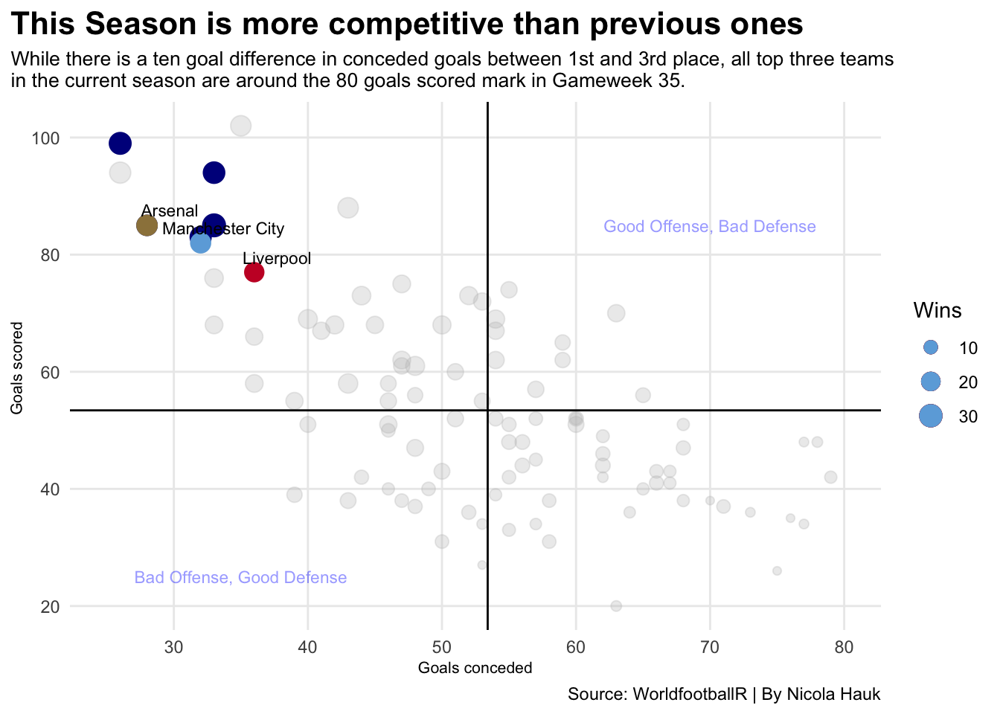

The premier league season is coming to an end. After 35 game weeks of competition, Liverpool, Manchester City and Arsenal are the favorites for the title. Each of those teams has their own strengths and weaknesses. While Arsenal is the highest scoring team on set pieces, Manchester City finally is back in form with Kevin De Bruyne and Erling Haaland coming back from injuries. A couple weeks ago, Jürgen Klopp, who has been the Liverpool head coach since 2015, announced his retirement. The fans are heartbroken over the news, but the hope is that he can be sent off with another trophy in his hand.
Manchester City, lead by manager Pep Guardiola, is the perfect mix of experienced players and young talent and has come out on top in many title races in Premier League history. Liverpool had an outstanding year even though they battelled injuries from up to 11 players at a time. A lot of young players have stepped up and quickly adjusted to the high-pressure environment. Unlike the other two contestant, Arsenal hasn’t won a title since 2004. While they are not used to dealing with the pressure of the title race, they have been the most constant over the last couple game weeks.
Code
library(tidyverse)library(worldfootballR)library(ggbump)library(ggalt)library(ggtext)library(ggrepel)library(patchwork)PL24 <-fb_season_team_stats("ENG", "M", 2024, "1st", "league_table")PL23 <-fb_season_team_stats("ENG", "M", 2023, "1st", "league_table")PL22 <-fb_season_team_stats("ENG", "M", 2022, "1st", "league_table")PL21 <-fb_season_team_stats("ENG", "M", 2021, "1st", "league_table")PLbasic <-fb_season_team_stats("ENG", "M", 2020:2024, "1st", "league_table")PLshooting <-fb_season_team_stats("ENG", "M", 2021:2024, "1st", "shooting")football <-fb_big5_advanced_season_stats(season_end_year=2021:2024,stat_type="defense",team_or_player="team")PLdefense <- football |>filter(Comp=="Premier League")currentleague <- PLbasic |>filter(Squad !="Leeds United")|>filter(Squad !="Leicester City") |>filter(Squad !="Norwich City") |>filter(Squad !="Southampton") |>filter(Squad !="Watford")ggplot()+geom_bump(data= currentleague, aes(x=Season_End_Year, y=Rk, color = Squad))+geom_point(data= currentleague, aes(x=Season_End_Year, y=Rk, color = Squad), size=5)+geom_text(data= currentleague, aes(x=Season_End_Year, y=Rk, label=Pts), size=3) +geom_text(data = currentleague |>filter(Season_End_Year ==min(Season_End_Year)), aes(x = Season_End_Year - .2, y=Rk, label = Squad), size =2.5, hjust =1) +geom_text(data = currentleague |>filter(Season_End_Year ==max(Season_End_Year)), aes(x = Season_End_Year + .2, y=Rk, label = Squad), size =2.5, hjust =0) +scale_color_manual(values =c("#9C824A", "grey", "grey", "grey", "grey", "grey", "grey", "grey", "grey", "grey", "#C8102E", "grey", "#6CABDD", "grey", "grey", "grey", "grey", "grey", "grey", "grey", "grey")) +scale_x_continuous(breaks=c(2020, 2021, 2022, 2023, 2024), limits=c(2019.2, 2025)) +scale_y_reverse(breaks=c(1,2,3,4,5,6,7,8,9,10,11,12,13,14,15,16,17,18,19,20))+labs(x=element_blank(),y="Rank", title="Building the success over time", subtitle="Arsenal started the journey to the title five years ago from place 8. They finished 8th, 5th and 2nd\nsince then and are the current leader of the table with four points less then last years final standings.",caption="Source: WorldfootballR | By Nicola Hauk" ) +theme_minimal() +theme(legend.position ="none",panel.grid.major =element_blank(),plot.title =element_text(size =18, face ="bold"),axis.title =element_text(size =8), plot.subtitle =element_text(size=10), panel.grid.minor =element_blank(),plot.title.position ="plot" )
Only time will tell if Arsenal can resist the pressure and finish the season strong. The Premier League is one of the best leagues in the world, so most games finish with a one or two goal margin. The success Arsenal had this season mostly comes from great set plays. With close games, smart tactical play and organized defenses, the game often comes down to a set play chance. The majority of goals are scored either in transition or on a set play because the individual level and team tactics have advanced a lot. With Arsenal being the best team on set plays in the league, they gain an advantage in those tight games. Statistically, they are already ahead of title winners in the past seasons.
Code
afcgoals <- PL24 |>filter(Squad =="Arsenal")lfcgoals <- PL24 |>filter(Squad =="Liverpool")mcgoals <- PL24 |>filter(Squad =="Manchester City")winner <- PLbasic |>filter(Rk ==1)ggplot()+geom_point(data=PLbasic, aes(x=GA, y=GF, size= W), color="grey", alpha = .3)+geom_point(data=winner, aes(x=GA, y=GF, size= W), color ="darkblue")+geom_point(data=afcgoals, aes(x=GA, y=GF, size= W), color="#9C824A")+geom_point(data=lfcgoals, aes(x=GA, y=GF, size= W), color="#C8102E")+geom_point(data=mcgoals, aes(x=GA, y=GF, size= W), color="#6CABDD")+geom_vline(xintercept =53.41 ) +geom_hline(yintercept =53.41)+geom_text(aes(x=35, y=25, label="Bad Offense, Good Defense"), color="blue", size=3,alpha=.4) +geom_text(aes(x=70, y=85, label="Good Offense, Bad Defense"), color="blue", size=3,alpha=.4) +geom_text_repel(data=afcgoals, aes(x=GA, y=GF, label=Squad), size=3) +geom_text_repel(data=lfcgoals, aes(x=GA, y=GF, label=Squad), size=3) +geom_text_repel(data=mcgoals, aes(x=GA, y=GF, label=Squad), size=3) +scale_size_continuous(name="Wins", range =c(.5,5)) +scale_x_continuous(breaks=c(20,30,40,50,60,70,80), limits=c(25,80))+labs(x="Goals conceded", y="Goals scored ", title="This Season is more competitive than previous ones", subtitle="While there is a ten goal difference in conceded goals between 1st and 3rd place, all top three teams\nin the current season are around the 80 goals scored mark in Gameweek 35.", caption="Source: WorldfootballR | By Nicola Hauk" ) +theme_minimal() +theme(plot.title =element_text(size =16, face ="bold"),axis.title =element_text(size =8), plot.subtitle =element_text(size=10), panel.grid.minor =element_blank(),plot.title.position ="plot" )

If the team scores or not is impacted by ability of both teams on the field. As mentioned, Arsenal has the most success on set pieces. Manchester City is a possession-based team and one of the best technical teams in the league, which is the opposite playing style of Liverpool who is superior in the transition game. While the tactical plan of a coach usually stays similar throughout a season, the teams have to adapt to specific opponents and play to the opponents’ weaknesses.
Code
pointspergame <-tm_matchday_table(country_name="England", start_year="2023", matchday=c(20:38))Arsenal <- pointspergame|>filter(squad =="Arsenal"| squad =="Bournemouth"| squad =="Man Utd"| squad =="Everton")Liverpool <- pointspergame|>filter(squad =="Liverpool"| squad =="Tottenham"| squad =="Aston Villa"| squad =="Wolves")MC <- pointspergame|>filter(squad =="Man City"| squad =="Wolves"| squad =="Fulham"| squad =="Tottenham"| squad =="West Ham")line1 <-ggplot()+geom_line(data= pointspergame, aes(x= matchday, y=pts, color = squad))+geom_text(data = Arsenal |>filter(matchday ==max(matchday)), aes(x = matchday + .2, y=pts, label = squad), size =2, hjust =0)+labs(y="Points", x ="Matchday")+theme_minimal() +scale_color_manual(values =c("#9C824A", "lightgrey", "gold", "lightgrey", "lightgrey", "lightgrey", "lightgrey", "lightgrey", "gold", "lightgrey", "lightgrey", "lightgrey", "lightgrey", "gold", "lightgrey", "lightgrey", "lightgrey", "lightgrey", "lightgrey", "lightgrey")) +scale_x_continuous(breaks=c(30,35), limits=c(30,40))line2 <-ggplot()+geom_line(data= pointspergame, aes(x= matchday, y=pts, color = squad))+geom_text(data = Liverpool |>filter(matchday ==max(matchday)), aes(x = matchday + .2, y=pts, label = squad), size =2, hjust =0)+labs(y="Points", x ="Matchday")+theme_minimal() +scale_color_manual(values =c("lightgrey", "pink", "lightgrey", "lightgrey", "lightgrey", "lightgrey", "lightgrey", "lightgrey", "lightgrey", "lightgrey", "#C8102E", "lightgrey", "lightgrey", "lightgrey", "lightgrey", "lightgrey", "lightgrey", "lightgrey", "pink", "pink")) +scale_x_continuous(breaks=c(30,35), limits=c(30,40))line3 <-ggplot()+geom_line(data= pointspergame, aes(x= matchday, y=pts, color = squad))+geom_text(data = MC |>filter(matchday ==max(matchday)), aes(x = matchday + .2, y=pts, label = squad), size =2, hjust =0)+labs(y="Points", x ="Matchday")+theme_minimal() +scale_color_manual(values =c("lightgrey", "lightgrey", "lightgrey", "lightgrey", "lightgrey", "lightgrey", "lightgrey", "lightgrey", "lightgrey", "lightblue", "lightgrey", "lightgrey", "#6CABDD", "lightgrey", "lightgrey", "lightgrey", "lightgrey", "lightblue", "lightblue", "lightblue")) +scale_x_continuous(breaks=c(30,35), limits=c(30,40))line1 + line2 + line3 +plot_annotation(title ="An adventage in the final weeks of the titlerace",subtitle ="Going into the last three weeks of competition Manchester City has a double gameweek coming up,\nbut Arsenal is the only top three team without a top 5 opponent in the end of the Season.",caption ="Source: WorldfootballR | By Nicola Hauk" ) &theme(legend.position ="none",panel.grid.major =element_blank(),plot.title =element_text(size =16, face ="bold"),axis.title =element_text(size =8), plot.subtitle =element_text(size=10),panel.grid.minor =element_blank(),plot.title.position ="plot" )
Considering the stats, Liverpool is falling behind in the title race with an increasing point gap. It will come down to who can keep up the pace. Manchester City has it in their own hands, coming up on top if they manage to win all their last four games. Can they win a fourth title in a row, or will Arsenal come through and win their first title since 2004?